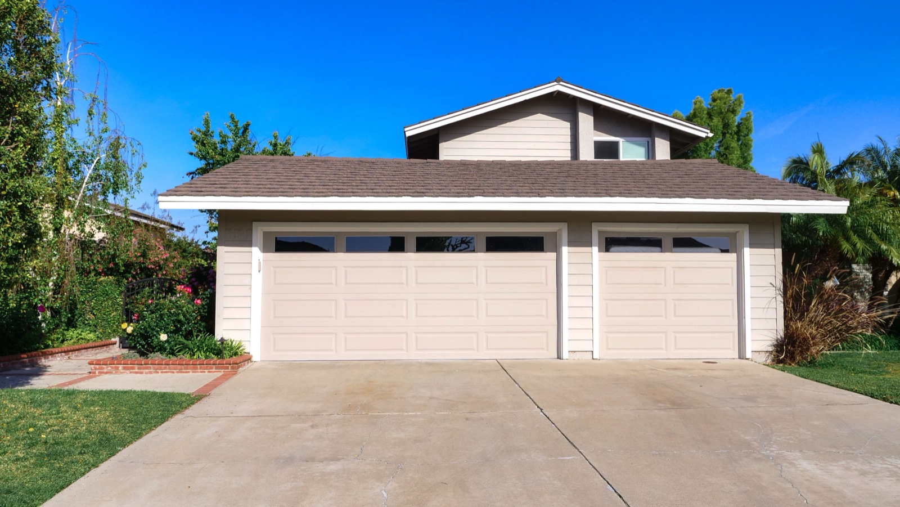

Manufactured & Mobile Homes
Homes built entirely in a factory to a national code, then transported to the site. The cheapest per-square-foot housing there is. A modern one looks like any other house. The tropical catch is transport and tie-downs.

Manufactured homes, the modern term for "mobile homes," are built entirely in a factory on a permanent steel chassis, then transported whole to the site as a single-wide, double-wide, or triple-wide. Built to a single national standard, the HUD code in the US, they are the cheapest housing per square foot in the developed world. Forget the old trailer stereotype. A modern manufactured home is often indistinguishable from a site-built house.
How they're built — and how they differ from modular
The whole home is assembled on an indoor line — framing, wiring, plumbing, cabinets, finishes — then towed to the lot on its own chassis and set, often on piers with skirting. This is the key difference from modular homes: modular sections are built to local building codes and craned onto a permanent foundation, whereas manufactured homes are built to the single national code and keep their transport chassis. Both are factory-built; the code, the chassis, and how permanent they are set them apart.
What does it cost?
This is the $ of homes: manufactured homes commonly run $400–900/m² ($40–85/sq ft) for the home itself — a fraction of site-built — though land, transport, foundation/piers, and utility hookups add to the delivered cost. The factory efficiency is real and hard to beat on price. (Approximate; size and finish drive it.)
The trade-offs at a glance
| Factor | Rating | Notes |
|---|---|---|
| Cost | 🟢 | Cheapest housing per square foot |
| Build speed | 🟢 | Built in a factory in weeks |
| Quality control | 🟢 | Indoor line, consistent |
| Transport | 🔴 | Must be trucked whole — hard on remote/mountain lots |
| Heat/climate fit | 🟡 | Depends on spec; many need better insulation for the tropics |
| Hurricane/wind | 🟡 | Needs proper anchoring/tie-downs — the critical detail |
| Resale/appreciation | 🔴 | Can depreciate, unlike site-built on owned land |
| Permitting/finance | 🔴 | Uncommon in Latin America; financing/import friction |
How hard is it to get one built?
In North America, buildability is a non-issue. You order it and it's delivered. In Panama or Costa Rica the picture flips. The factory-built manufactured-home industry that makes them cheap barely exists regionally, so you'd be importing a home, which is expensive and defeats the low price, or relying on the far more common local concrete build. Two things really limit it here. Transport, since trucking a whole house up a mountain road to a highland lot is often impractical, and anchoring, since manufactured homes must be tied down properly to survive hurricane wind, the classic failure mode. Where a manufactured home shines is flat, accessible land in a market with a supply chain for them. In most of tropical Latin America, a small local concrete build or a modular system usually makes more sense.
Thinking about building in Panama or Costa Rica?
SORA is a fixed-price design-build platform for foreign buyers. We build in reinforced concrete by default — and we can talk you through when an alternative method actually makes sense for the tropics. Play with cost live in the 3D configurator.
See real 2026 build costs →Frequently asked questions
What's the difference between a manufactured home and a modular home?
Both are factory-built, but a manufactured home is built to a single national code on a permanent steel chassis and towed whole to the site, while a modular home is built to local building codes in sections that are craned onto a permanent foundation. Modular is generally treated more like conventional real estate; manufactured is cheaper but can depreciate.
Are manufactured homes safe in hurricanes?
They can be, but only if properly anchored. Manufactured homes must be tied down to engineered anchors to resist high wind — inadequate anchoring is the classic reason they fail in storms. With correct tie-downs and a proper foundation, a modern manufactured home performs far better than the old stereotype.
Can you buy a manufactured home in Panama or Costa Rica?
It's uncommon. The factory supply chain that makes manufactured homes cheap is a North American phenomenon, so in Latin America you'd typically be importing one (costly, and it undercuts the low price) or building locally in concrete. Transport to remote or mountainous lots is also a real constraint.
Sources & verification
Figures in this guide were checked against primary and authoritative sources on 27 July 2026. Immigration, tax, and cost figures change — always confirm the current rules with the official body or a licensed professional before acting.
- Bob Vila — manufactured vs modular homes
- MN Property Group — factory-built housing trends